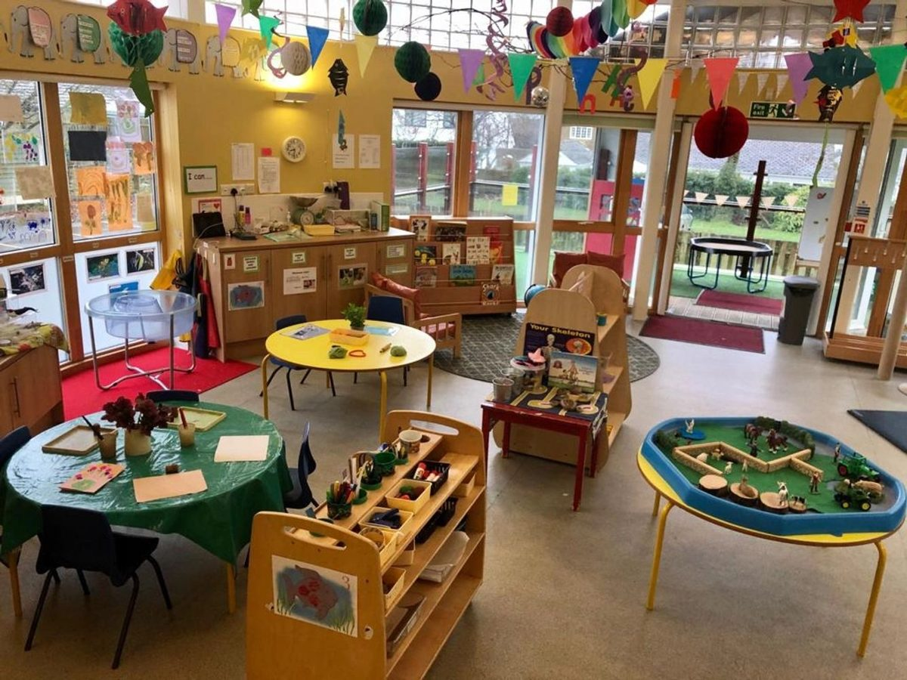
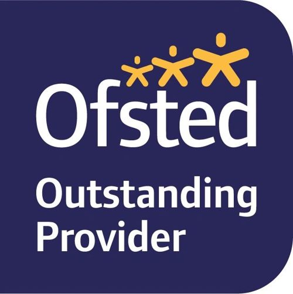
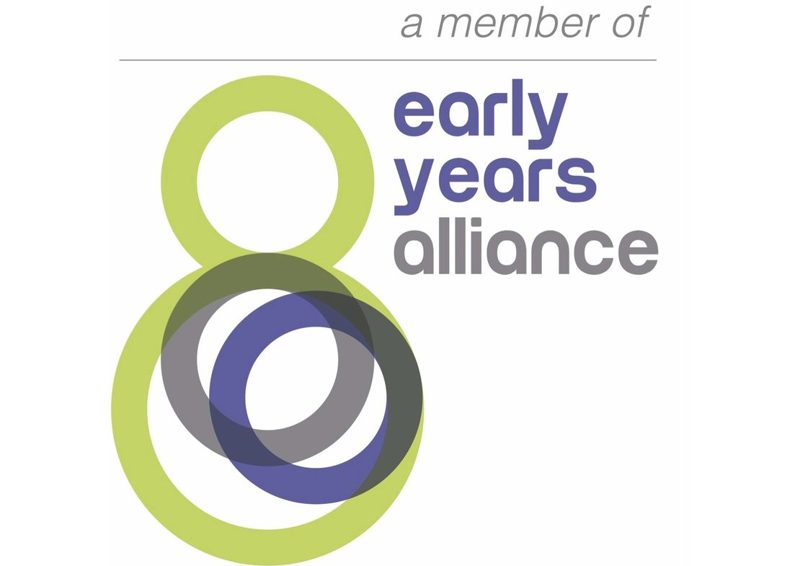

Menston Preschool is a non-profit making, committee led preschool. With a strong focus on learning through play, we are passionate about providing high quality care and education in a safe, secure and stimulating environment. We work in partnership with parents/carers and have strong links with local primary schools and the local community.
Menston Preschool is a registered charity and a member of the Early Years Alliance. We are also registered with, and inspected by Ofsted, and in June 2024 we were extremely proud to be graded as Outstanding! Please use the menu above to explore our website and find out more about our Outstanding setting.
To find out more about us, click the button below.

